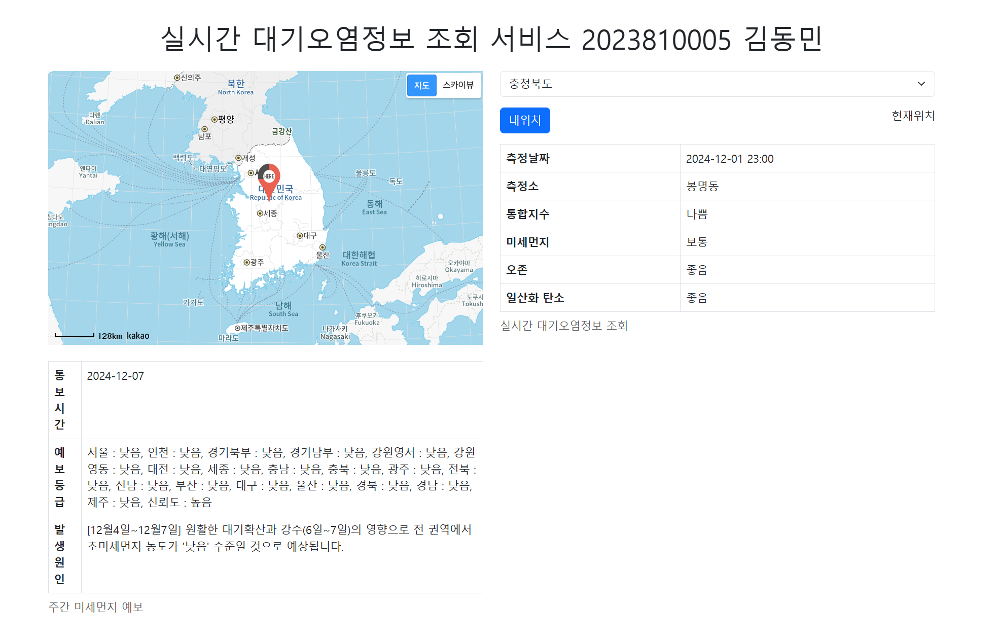
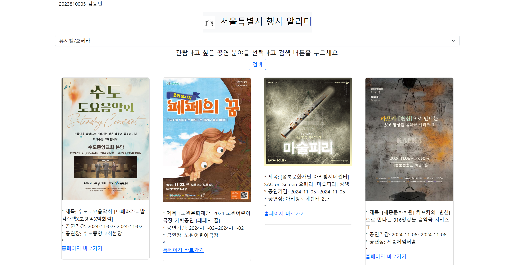
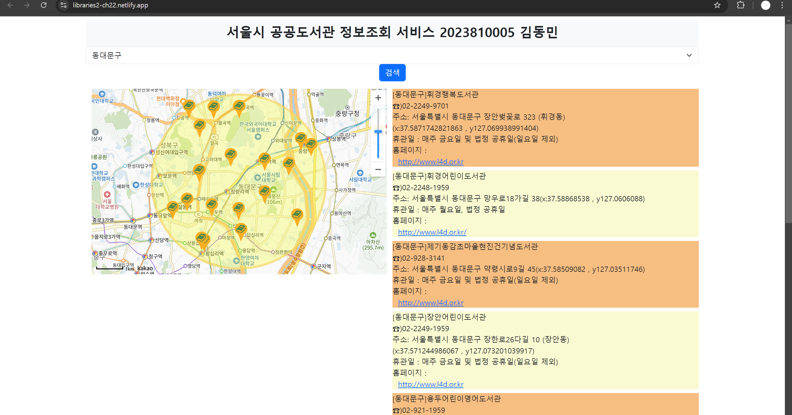

프로젝트 포트폴리오
2023810005 김동민
프로젝트 1
프로젝트 2
프로젝트 3
프로젝트 1: Air Pollution Inquiry Mashup

프로젝트 보기
지역의 대기오염 정도를 검색합니다.
프로젝트 2: 서울시 문화행사 알리미

프로젝트 보기
테마별 서울시 행사들을 검색합니다.
프로젝트 3: Kakao Map을 이용한 서울시 공공도서관 검색

프로젝트 보기
카카오 맵을 이용하여 지역별 도서관에 대한 정보를 검색합니다.